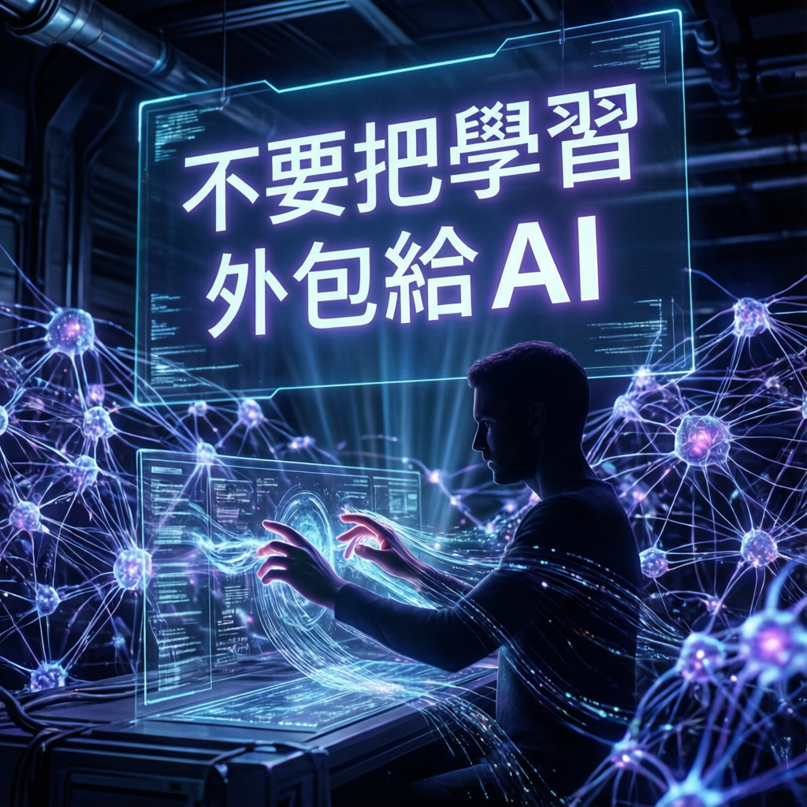

Google雲端AI總監警示：用AI換速度，你賠上的是「未來的能力」

本次報告聚焦於人工智能時代下人類學習能力的關鍵議題。Google雲端AI總監提出重要警示，指出過度依賴AI工具將對個人長期發展造成深遠影響。研究指出，雖然AI能顯著提升短期工作效率，但這種「速度換能力」的模式可能削弱人類的核心競爭力。
專家分析強調，學習過程中的認知挑戰與問題解決經驗，是建構深度能力不可或缺的要素。當這些環節被AI取代，人類將逐漸失去獨立思考與創新的基礎。
數據顯示，當前職場與教育場域中AI工具使用率持續攀升，但伴隨而來的是基礎能力的隱憂。業界觀察發現，長期依賴AI完成認知任務的個體，在面對複雜問題時往往缺乏必要的分析框架與解決策略。
「未來的能力」並非指操作AI的技術，而是人類在AI輔助下依然能夠獨立思考、批判驗證與創造價值的綜合素養。真正的競爭優勢來自於將AI作為增強工具，而非替代大腦的捷徑。
研究團隊建議採取「人機協作」的平衡模式，在善用AI效率的同時保留關鍵的學習環節。具體做法包括：主動選擇手動完成部分任務以維持技能熟練度、對AI產出進行深度分析與質疑、以及建立系統性的知識內化機制。
教育領域專家進一步指出，課程設計應重新評估AI工具的使用邊界，確保學習者在關鍵發展階段獲得充分的認知挑戰。企業培訓同樣需要調整，從「效率最大化」轉向「能力可持續性」的長期思維。
業界觀察人士預期，AI技術將持續滲透各領域，但人類能力的價值定位將出現重大轉變。能夠在AI時代保持獨立思考與創新能力的個體，將成為最稀缺的資產。組織個人皆需重新定義「效率」與「成長」的關係，在追求當前產出的同時，為未來能力儲備投資。
最終，本次報告呼籲建立新型的學習典範：讓AI承擔重複性勞動，而人類專注於高階認知與創造活動。唯有如此，才能在技術浪潮中既享受便利，又保全人類獨特的智慧價值。